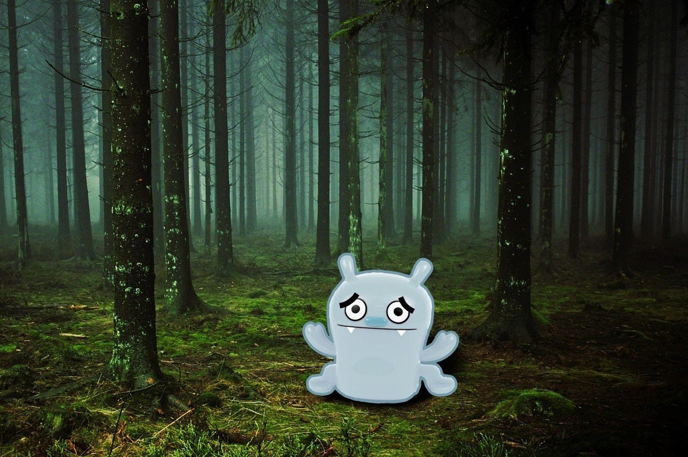

You decide to deeper into the forest, as you admire the sites of the forest you see a small figure. It appeared to be made of a bluish-gray stone. You carefully approach as it seems not dangerous. It looked scared and it started to speak “Home...Golem Lost.”